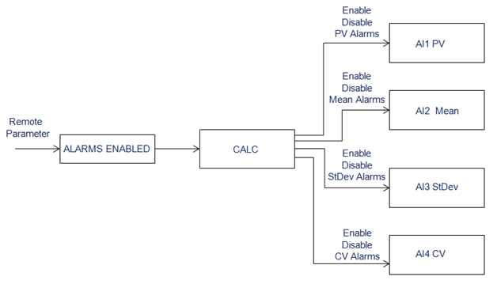
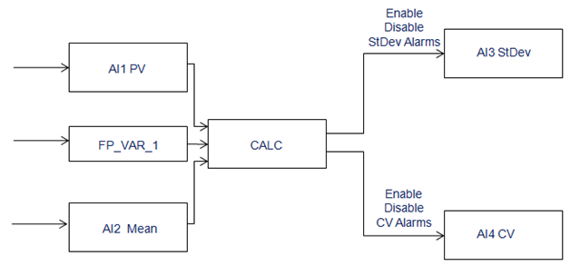

Dynamic enabling and disabling of SPM alarms
Alarm Management by external reference
The ALARMS_ENABLED configuration parameter in the template is used to link the control module to an external reference used to toggle the SPM alarms between the enabled and the disabled states. The value of this external reference can be modified by a process parameter, or by an operator action. The external reference is generally a logic statement in another control module. A logic result of 0 (zero) disables alarms. A logic result of 1 (one) enables alarms. A single external reference can be used to enable or disable the alarms from a single or multiple instances of SPM modules.
The ALARMS_ENABLED configuration parameter enables and disables the HI and LO alarms of all AI Blocks (AI1, MEAN, STDEV, CV). The parameter does NOT enable or disable AI1 HIHI (HI_HI_ALM), AI1 LOLO (LO_LO_ALM), or PV_BAD alarms.

Alarm management by PV or Mean
The PV_LIM_MODE parameter disables and enables StDev or CV alarms based on the PV or MEAN exceeding the HI or LO limit. The parameter FP_VAR_1 (described in Faceplate variables) determines whether the PV or Mean limits are used to enable or disable StDev and CV alarms.